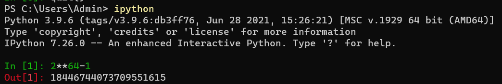
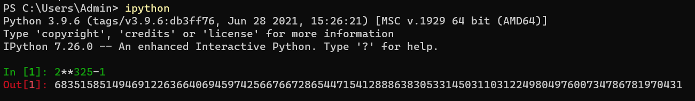
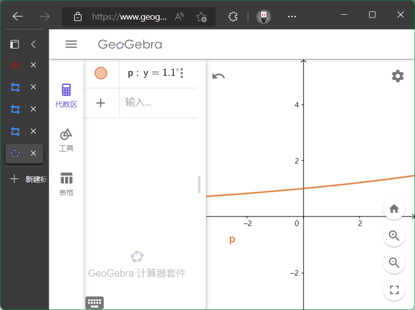
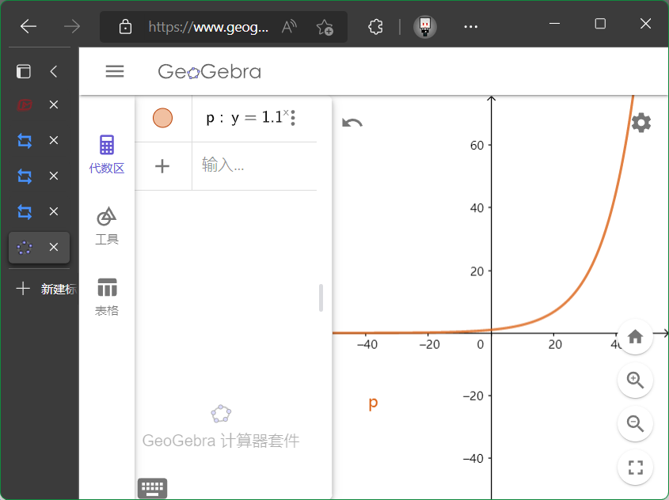
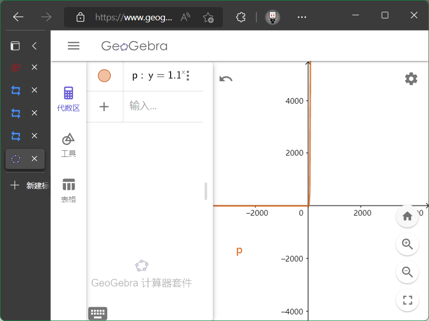
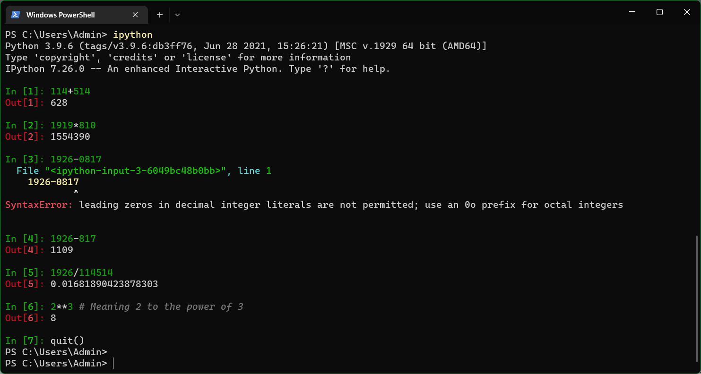
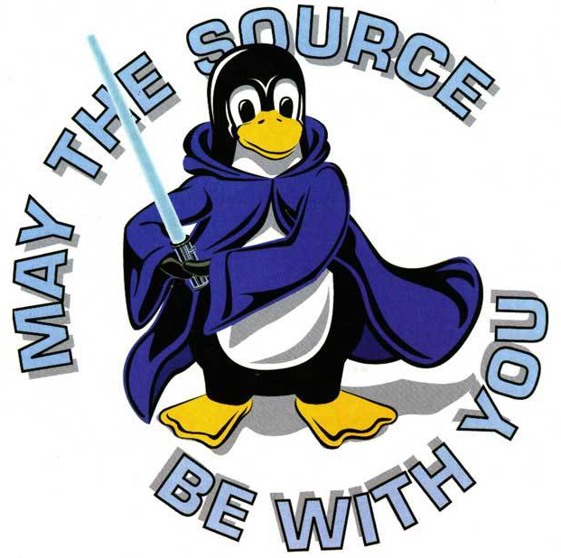

7LN - 指数函数(1)
指数函数contd
从逆运算的角度看指数函数
我们学过加法, 乘法, 它们都有逆运算.
指数也有, 我们后面回学习.
总之看下指数的定义: 有点难打, 大家应该都会, \(n\) 个 \(a\) 相乘. 底数, 指数, 幂.
- 指数是正整数.
- 我们要拓展! \(\N^*\to \N, a^0=1(a\neq 0)\) .
- 为什么? 要满足一些条件, 新定义要满足所有的运算法则.
- 为了满足 \(a^ma^n=a^{mn}\) .
- 那么 \(a^n/a^n=1=a^0\) , 而且分母不能为0.
$$
\left\{\begin{array}{l}
a^{m} \cdot a^{n}=a^{m+n} \\
a^{m} / a^{n}=a^{m-n} \\
\left(a^{m}\right)^{n}=a^{m \cdot n} \\
(a b)^{n}=a^{n} b^{n}
\end{array}\right.
$$
- 我们还要拓展! \(\N \to \mathbb{Z}\) 怎么办?
- \(a^{-n}=1/a^n\) .
- 问: \((1/3)^{-4}\) .
- 我们还要拓展! \(\mathbb{Z} \to \textbf{Q}\) 怎么办?
- \(a^{1/n}\) 怎么说?
- 我们知道 \((a^{m/n})^n=a^m\) , 那就挺好的. 那就是表示 \(\sqrt[n]{a^m}\) .
- 哦, 那你就明白了, 所有的规则都是一样的.
- (1)另一种视角: \(a^{m/n}=\sqrt[n]{a^m}=(\sqrt[n]a)^m\)
- 这两个式子一样吗? 用 \(a^{4/6}\) 举一个例子.
- 令 \(a=-1\) , \(a^{4/6} \quad ?\quad a^{2/3}\) , 一样吗?
- 不行, 要求 \(m,n\) 既约(已经约分干净了, 也就是互质).
- 其余的都可以吗? \(a^{1/2}\)
- 能算的都能算, 不能算的两个都不能算. 这才叫保持一致(consistency).
- (2)负分数指数: \(a^{-m/n}=1/a^{m/n}\) .
- 一点预告:
- \(a=-1\) 真的不能算吗? 后面我们会学 \(i=\sqrt{-1}, 以及\textbf{C}\) .
例子: 计算 \((16/9)^{-3/2}\) . ( \(27/64\) ).
好耶! 我们已经拓展到了有理数了!
- \(\textbf{Q} \to \mathbb{R}\) 不会!
- 为什么? 因为我们不知道什么是无理数.
- 我知道啊, 无限不循环小数啊!
- 知道=知道一定可以怎样生成.
- 由于加减乘除运算的封闭性, 暂时还得不到这样的结论.
- 开根号不可以吗?
- 这是无理数的一小部分(代数数, 某一个多项式的根)
- 其他部分叫做超越数. \(\pi, e\) 等等, 我们不知道如何得到的.
- 可以无限去逼近. 想要多接近, 就有多接近.
- 这个过程通常被成为"夹逼".
- (1)是实数
- (2)满足前面的所有运算法则
看点例题
-
Ex.1
- 技巧: 答案一定形如 \(?x^?y^?\) .
- 认识式子结构, 关注每一个部分, 会快很多.
- 练习口算, 既快有准.
- \(-27/2x^0y^1\) .
- 推荐时间, \(<10\text{s}\)
-
Ex.2
- (1) \(4x^{1/2}-3^3-4x^{1/2}+4\) .
- (2) 请大家化简.
- 不要写成"开多少次方分之一"的情况
- 不过也很正常, 大家新学一个东西, 都有这样的想法
我■, 又■■要学一个新东西, 老子不要!
-
观察式子有什么关系. 注意 \((n+m), (n^2+m^2), (n^4+m^4)\cdots\)
-
就像以前一样, 观察它们之间的关系而不是形式.
-
关系是平方. 派一个 \((n-m)\) 就行了! Easy!
-
答案是 \((1-1/2)/(1-2^{-1/32})=1/2(1-2^{-1/32})^{-1}\) . 尽量用分数指数来写, 会方便很多.
-
Ex.3 (5min)
- (1) 看定义域. \(8/27\) .
- (2) 注意绝对值. D. (初中知识)
- (3) \(\pm {\sqrt2\over4}\) .
为什么我们要这么干?
- 什么数都能算, 这个过程, 形成了函数!
- 有什么关系
指数函数
一些定义
- (1) \(f(x)=a^x, a>0, a\neq1\) .
- 这个定义的原因, 比如 \(-1\) 作为底数, 有的能算, 有的不能算, 很烦人. 高中不研究, 而且 \((-1)^{\pi}\) 咋整?
- \(a=1\) 太没劲. 研究的时候形式不太一样.
- 只有长成这样的叫指数函数. 其他的都不叫.
判断: \(2^x, 2^x+1, (1/2)^x, 2^{-x}.\)
图像与性质
- 描点, 画图. 请画出 \(y=2^x, y=(1/2)^x\) .
- 一二象限最好多一点. 因为它们都是正数.
这是两个代表, 下面看一些性质.
(1) 定义域 \(\mathbb{R}\) , 值域 \((0,+\infty)\) , 渐近线为 \(y=0\) .
(2) 单调性: \(a>1\) , 在 \(\mathbb{R}\) 上增. \(a\) 大就增, 小就减.
(3) 对称性: 没有.
(4) 定点: \((0,1)\) .
-
可以有 \((0,1),(1,a)\) .
-
注意大小关系.
-
Ex4. 我要画 \(x=...\)
特性(性质)
- (1) \(y=a^x\) 与 \(y=(1/a)^x\) 关于 \(y\) 对称.
- (2) 当底数大于1的时候, 增长非常快. 快到一切我们能想到的其他函数. \(x^2 \text{ v.s. } 2^x\) .
- 关于国际象棋和 \(2^{64}\) 的一个故事.
- 等于

Fun idea: 如果围棋发明者问你呢?

一张纸 \(0.1\text{mm}\) , 42次就可以从地球到月球.
看 \(y=1.1^x\) 的图像的样子.



这就解释了一个鸡汤 \((1.01)^{365}\approx37.8\) .
这就解释了一个鸡汤 \((0.09)^{365}\approx0.09\) .
其实本质原因是学习缺乏一个量化的及时反馈.
很难量化! 而且在短期内可能看不见成效.
但不要放弃, 你可以认为努力总有回报.
但是一天提高1%终究还是很困难的, 因为积累量大的情况下就很难完成.
请大家每天提升一点点吧!
看例题
- Ex. 5
- (2) 我们知道 \(0\le b/a\le 1\) , 但是分不清正负, 但可以判定对称轴. ( \(\alpha\) )
- 有没有可能还有谁? 画出所有的满足的
- 还可以开口向下的!
- (3) 左加右减. \(((1/4)^{-1/2})^{1-2x}\)
- Ex. 6
练习: \(3^x, x\in[-2,3]; \qquad 1/2^x, x\in[-3,6]\) .
你可能好奇, 刚刚的东西是什么?
用Python库计算?
- 下载Python
- 执行
pip install ipython
pip是包的安装器, 这个包就是许多开发人员开发的一些文件. install是安装的意思, ipython是一个对新手很友好的工具.
- 经过漫长的等待之后, 输入
ipython.
- 加减乘除都没问题.
- 我这里比较好看是因为用了
Windows Terminal, 字体比较统一.

in是我输入的, out是python的输出,- 第三行的输入错了, 看到它会报错(Syntax Error, 语法错误), 翻译过来就是
十进制整数文字中的前导零是不允许的；对八进制整数使用 0o 前缀.
- 这些信息就当阅读理解做就行了, 不难, 不会的词就上网查, 也很方便.
- 这就解释了为什么我每次讲义都有英语的对应标注(方便进一步探索).
总结: 学到了什么
其实你应该发现了, 正经的知识点前面都有括号标示序号. 比如(1)(2)这样的.
你还注意到了如何用python进行表达式求值.
你也可以学习下一些常见的概念, 这些都不简单, 但是如果你掌握了这些技巧并且加以应用的话, 那么未来很多难题的解决不过是花点时间写一个程序而已!
End.
May the force be with you.

为什么接触英语?
随着科学技术的发展, 在国际学术交流中使用英语已经成为常态: 顶尖的论文无一不使用英文来书写, 在国际上公认的计算机领域经典书籍也是使用英文编著. 顶尖的论文没有中文翻译版; 如果需要获取信息, 也应该主动去阅读英文材料, 而不是等翻译版出版. "我是中国人, 我只看中文"这类观点已经不符合时代发展的潮流, 要站在时代的最前沿, 阅读英文材料的能力是不可或缺的.
阅读英文材料, 无非就是"不会的单词查字典, 不懂的句子反复读". 如今网上有各种词霸可解燃眉之急, 但英文阅读能力的提高贵在坚持. "刚开始觉得阅读英文效率低", 是所有中国人都无法避免的经历. 如果你发现身边的大神可以很轻松地阅读英文材料, 那是因为他们早就克服了这些困难. 引用陈道蓄老师的话: 坚持一年, 你就会发现有不同; 坚持两年, 你就会发现大有不同.